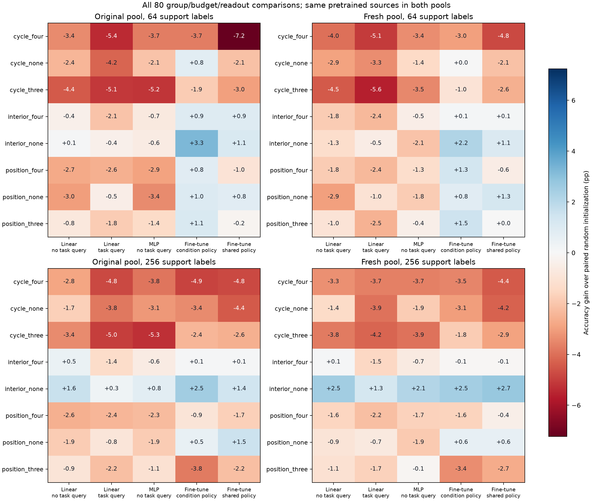

原生迁移各有 1,080 个端点，所有八个源组合、五读出、两预算均完成。只看长度的平滑计数基线，第一池 64/256 标签为 31.02%/33.74%，第二池为 30.80%/35.56%；第二池沿用第一池验证选出的带宽 2，不重新调参。
256 标签条件选参微调中，interior_none 对随机模型平均收益为 +2.52/+2.47 pp，方向重复，但正种子从 3/3 变为 2/3。绝对准确率为 34.79%/33.85%，第二池低于长度基线 1.70 pp。其他组及所有读出结果见下表与全量 CSV。
下图并列所有八组合、五读出、两预算，对随机初始化的收益使用统一色标。两列复用相同源模型，不能视作两次独立模型复制。

| 组 | 读出 | 第一池准确率 | 第二池准确率 | 第一池对随机 | 第二池对随机 | 第二池对长度 |
|---|---|---|---|---|---|---|
| cycle_four | finetune | 27.35% | 27.87% | -4.92 pp | -3.52 pp | -7.69 pp |
| cycle_four | finetune_shared | 27.48% | 26.97% | -4.79 pp | -4.41 pp | -8.59 pp |
| cycle_four | linear_query | 25.19% | 25.37% | -4.79 pp | -3.65 pp | -10.19 pp |
| cycle_four | linear_task_free | 26.61% | 25.22% | -2.83 pp | -3.32 pp | -10.34 pp |
| cycle_four | mlp_task_free | 25.94% | 25.16% | -3.85 pp | -3.66 pp | -10.40 pp |
| cycle_none | finetune | 28.85% | 28.33% | -3.42 pp | -3.05 pp | -7.23 pp |
| cycle_none | finetune_shared | 27.83% | 27.14% | -4.44 pp | -4.25 pp | -8.42 pp |
| cycle_none | linear_query | 26.17% | 25.11% | -3.81 pp | -3.91 pp | -10.45 pp |
| cycle_none | linear_task_free | 27.70% | 27.13% | -1.74 pp | -1.40 pp | -8.43 pp |
| cycle_none | mlp_task_free | 26.68% | 26.96% | -3.11 pp | -1.86 pp | -8.60 pp |
| cycle_three | finetune | 29.84% | 29.54% | -2.43 pp | -1.85 pp | -6.02 pp |
| cycle_three | finetune_shared | 29.71% | 28.49% | -2.56 pp | -2.89 pp | -7.07 pp |
| cycle_three | linear_query | 24.98% | 24.82% | -5.01 pp | -4.20 pp | -10.74 pp |
| cycle_three | linear_task_free | 26.03% | 24.76% | -3.41 pp | -3.77 pp | -10.80 pp |
| cycle_three | mlp_task_free | 24.49% | 24.90% | -5.30 pp | -3.92 pp | -10.65 pp |
| interior_four | finetune | 32.37% | 31.29% | +0.10 pp | -0.10 pp | -4.27 pp |
| interior_four | finetune_shared | 32.37% | 31.29% | +0.10 pp | -0.10 pp | -4.27 pp |
| interior_four | linear_query | 28.63% | 27.51% | -1.35 pp | -1.51 pp | -8.05 pp |
| interior_four | linear_task_free | 29.91% | 28.64% | +0.46 pp | +0.10 pp | -6.92 pp |
| interior_four | mlp_task_free | 29.17% | 28.17% | -0.62 pp | -0.65 pp | -7.39 pp |
| interior_none | finetune | 34.79% | 33.85% | +2.52 pp | +2.47 pp | -1.71 pp |
| interior_none | finetune_shared | 33.71% | 34.13% | +1.45 pp | +2.75 pp | -1.43 pp |
| interior_none | linear_query | 30.30% | 30.29% | +0.31 pp | +1.27 pp | -5.27 pp |
| interior_none | linear_task_free | 31.06% | 31.06% | +1.62 pp | +2.53 pp | -4.50 pp |
| interior_none | mlp_task_free | 30.56% | 30.94% | +0.77 pp | +2.12 pp | -4.62 pp |
| position_four | finetune | 31.36% | 29.75% | -0.90 pp | -1.64 pp | -5.81 pp |
| position_four | finetune_shared | 30.54% | 30.95% | -1.73 pp | -0.44 pp | -4.61 pp |
| position_four | linear_query | 27.60% | 26.87% | -2.39 pp | -2.15 pp | -8.69 pp |
| position_four | linear_task_free | 26.87% | 26.97% | -2.58 pp | -1.56 pp | -8.59 pp |
| position_four | mlp_task_free | 27.51% | 27.15% | -2.28 pp | -1.67 pp | -8.41 pp |
| position_none | finetune | 32.81% | 31.96% | +0.54 pp | +0.57 pp | -3.60 pp |
| position_none | finetune_shared | 33.81% | 31.99% | +1.54 pp | +0.60 pp | -3.57 pp |
| position_none | linear_query | 29.13% | 28.30% | -0.85 pp | -0.72 pp | -7.26 pp |
| position_none | linear_task_free | 27.59% | 27.59% | -1.86 pp | -0.95 pp | -7.97 pp |
| position_none | mlp_task_free | 27.93% | 26.90% | -1.86 pp | -1.92 pp | -8.65 pp |
| position_three | finetune | 28.51% | 28.00% | -3.76 pp | -3.38 pp | -7.56 pp |
| position_three | finetune_shared | 30.08% | 28.69% | -2.19 pp | -2.69 pp | -6.87 pp |
| position_three | linear_query | 27.81% | 27.33% | -2.17 pp | -1.69 pp | -8.23 pp |
| position_three | linear_task_free | 28.53% | 27.46% | -0.91 pp | -1.08 pp | -8.10 pp |
| position_three | mlp_task_free | 28.68% | 28.67% | -1.11 pp | -0.15 pp | -6.88 pp |